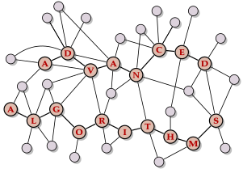

CS 627 – Advanced Algorithms (Summer 2025)

Advanced Algorithms (CS 627) is a specialization module (Vertiefungsmodul) covering algorithmic techniques for working with computationally hard problems as well as complementing impossibility results from complexity theory.
Planned Content
- Approximation Algorithms
- Parametrized and Exact Algorithms
- Randomized Algorithms
- Linear Programming, Primal-Dual Algorithms
- Complexity Theory
Quick links
Slido ⋅ Live ⋅ ILIAS ⋅ Campuswire ⋅ Units
Lectures
There will be synchronous interactive lectures, starting from April 22. Live participation is expected. Recordings and livestreams will be available on a best-effort basis; you can the livestream on the Live page.
Our regular lecture slots are
- Tuesdays 10am–noon in H|04, Hörsaal IV;
- Wednesdays 10am–noon in H|05, Hörsaal D;
Units
The module will consist of the following units; each will have a unit subpage (linked in the table) with slides, lecture notes, and video recordings for that unit.
| Week | Date (Mon) | Lecture | Exercises |
|---|---|---|---|
| 1 | 2025-04-21 | Unit 0: Administrativa | Mini-Seminar |
| Unit 1: Motivation | |||
| Unit 2: Complexity Theory Recap | |||
| 2 | 2025-04-28 | — | Mini-Seminar |
| 3 | 2025-05-05 | — | Mini-Seminar |
| 4 | 2025-05-12 | Unit 3: Pseudopolynomial Algorithms | Sheet 01 |
| Unit 4: Fixed-parameter Algorithms | |||
| 5 | 2025-05-19 | Unit 4: Fixed-parameter Algorithms | Sheet 02 |
| 6 | 2025-05-26 | Unit 4: Fixed-parameter Algorithms | Sheet 03 |
| Unit 5: Parameterized Hardness | |||
| 7 | 2025-06-02 | Unit 6: Advanced Parameterized Concepts | Sheet 04 |
| 8 | 2025-06-09 | Unit 7: Randomization Basics | Sheet 05 |
| 9 | 2025-06-16 | Unit 7: Randomization Basics | Sheet 06 |
| Unit 8: Randomized Complexity | |||
| 10 | 2025-06-23 | Unit 8: Randomized Complexity | Sheet 07 |
| Unit 9: Random Tricks | |||
| 11 | 2025-06-30 | Unit 9: Random Tricks | Sheet 08 |
| 12 | 2025-07-07 | Unit 10: Approximation Algorithms | Sheet 09 |
| 13 | 2025-07-14 | Unit 11: Linear Programming | |
| 14 | 2025-07-21 | Bonus: Research Talk, Q&A | Oral Exam Slot 1 |
Tutorials (Übungen)
There will be exercises, required for admission to the exam. Details will be given in class.
There is a weekly tutorial session every Tuesday, 1:15pm (sharp) to 2:45pm, in Seminar Room V (05D09).
Online Tools
We will use several tools and services that have proven effective in this module.
Campuswire
Campuswire is our main online communication channel.
Any questions relating to the module should be posted on Campuswire on the question & answer forum, the “class feed”.
You can post anonymously if you prefer, and you are strongly encouraged to answer each other’s questions, as well!
You can also use the platform for (social or topical) discussions in the chat rooms.
ILIAS
We will use the university’s official learning management system ILIAS for announcements and examination-related information.
Slido
During the live lectures, I will use Slido to for interactive parts.
Exam Question Gallery
We maintain a collaborative exam question gallery.
Join us in making this a great resource for preparation for the exam – and if your questions are good enough, they might end up getting asked!
Exam & Assessment
The module mark is based on the final examination. To be admitted to the exam, you must achieve a passing grade in the tutorials.
More details will be given in class.
Further reading
The module does not follow a single specific textbook, but rather combines parts from several sources; the unit subpages give more details on the specific sources used in each unit.
- J. Hromkovic: Algorithmics for Hard Problems
overview, covers many of the same examples - S. Arora and B. Barak: Computational Complexity: A Modern Approach
reference for the complexity theory parts - M. Cygan et al.: Parameterized Algorithms
reference for the parameterized algorithms parts - V. Vazirani: Approximation Algorithms
reference for the approximation algorithms parts - R. Motwani and P. Raghavan: Randomized Algorithms
reference for the randomized parts
Large parts of this module are based on lectures I taught a while ago. Recordings are available below. These give a good idea for the content of the module, but note that parts of the material is different.